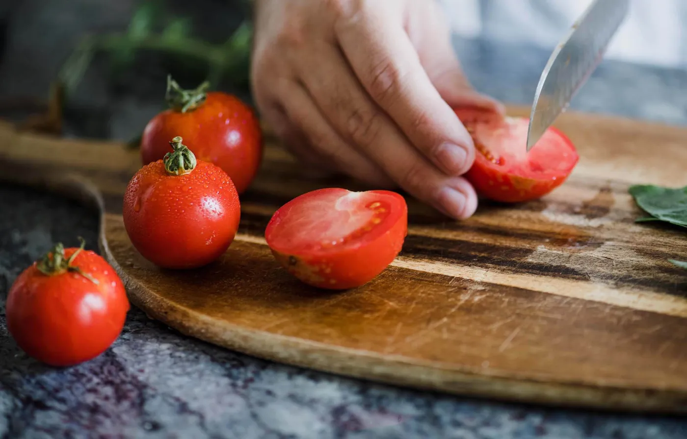
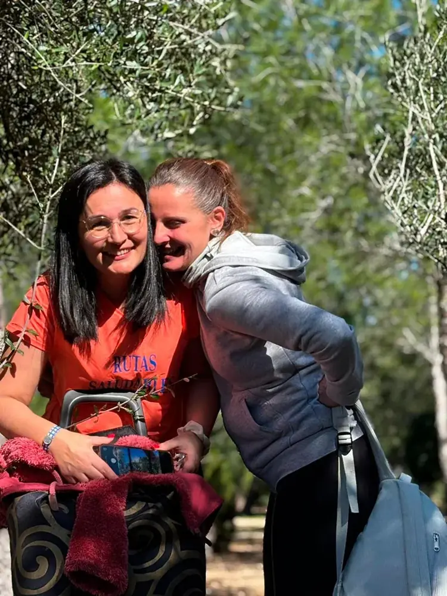
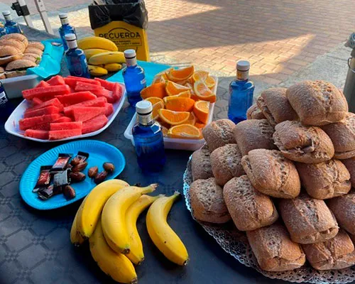
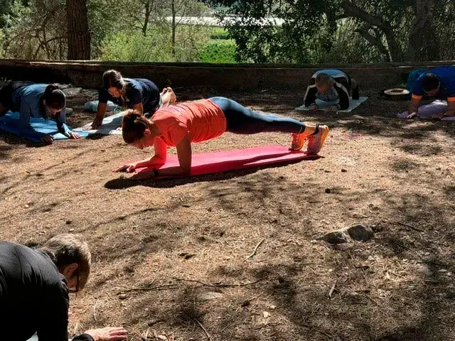

Presoterapia
Mejora la circulación y el retorno venoso, y alivia las piernas cansadas. En Llíria, miércoles y jueves. Bono de 5 sesiones por 45 €.
Soy dietista desde 2003. Preparo planes de alimentación a tu medida, pensados para tu día a día, tus gustos y tu salud. Nada de prohibiciones ni dietas milagro: hábitos que puedas mantener.

23 años
en consulta






Paso consulta en dos sitios. Elige el que te quede mejor.
Pide cita por teléfono o WhatsApp en el 629 707 793, o escríbeme a ruth.rodrigo@icloud.com.
Cada persona come distinto, trabaja distinto y tiene objetivos distintos. Por eso empiezo escuchando y diseño el plan contigo, no para ti.
La psiconeuroinmunología (PNI) es la base de mi consulta: miro cómo se relacionan los distintos sistemas del cuerpo para llegar al origen del problema y no quedarme en el síntoma.
Mis padres tenían una herboristería, y de ahí me viene la fitoterapia. Hoy la combino con la evidencia científica más actual, y sigo formándome en congresos y cursos especializados.
Una mañana al aire libre que organizo con Ana Peñarrocha, licenciada en Ciencias de la Actividad Física y del Deporte. Unimos ejercicio y nutrición en unas cuatro horas, para cualquier persona y cualquier nivel.
Mejora la circulación y el retorno venoso, y alivia las piernas cansadas. En Llíria, miércoles y jueves. Bono de 5 sesiones por 45 €.
En las dos consultas, Valencia y Llíria, con packs por zonas. Ver las tarifas.
Esteticista desde 1992. Cada tratamiento parte de lo que necesita tu piel, con tecnología actual y productos de primera.
Soy parte del club ADO y preparo los avituallamientos de meta de sus carreras. Fruta, bocadillos y agua para recuperar bien después del esfuerzo.
Más fotos en Facebook¿Te cuesta pensar qué cocinar? En el grupo de WhatsApp Recetitas Comensanas comparto ideas sanas y fáciles para cada semana.
Entrar al grupoNo. Buscamos hábitos sanos que puedas mantener. El plan se adapta a tu vida, sin restricciones extremas ni dietas milagro.
Sí. Cada plan se hace a medida, según tus objetivos, tus gustos, tu rutina y tu estado de salud.
Depende de cada persona y de lo que busque, pero con constancia mucha gente nota cambios en pocas semanas.
Sí. Te doy recomendaciones de ejercicio adaptadas a tu nivel para que el plan funcione mejor.